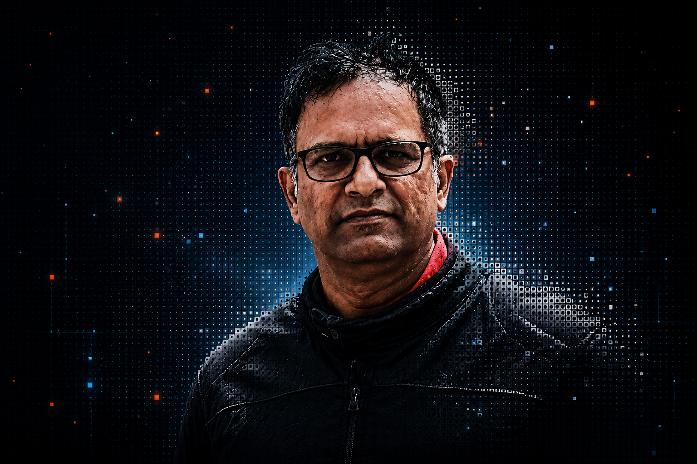

THE PERSON BEHIND THE WORK
CREATIVE.
CURIOUS.
I’m Harish, a BFA-trained visual designer and UI/UX leader. I craft user-centered web and mobile applications aligned with business goals—working closely with developers, product managers, and stakeholders.
01 Wireframing, user flows, prototyping, and mockups.
02 Responsive design, mobile UI, and interaction design.
03 User research, usability testing, and information architecture.
04 Figma, Adobe XD, Sketch, HTML5 / CSS3, Photoshop & Canva.
